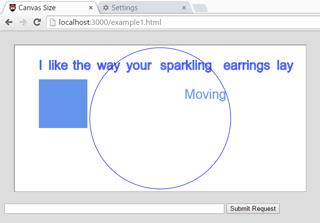

COMP 2406 - Fall 2017 Tutorial #3
Passing JSON Objects
© L.D. Nel 2017
Revisions will be noted here
Description:
The purpose of this tutorial is to get you started working with passing JSON objects between client and server. Also to modify an exising application to get used to the code. This code might be useful to you for completing the assignment #1.
In this demonstration the client will request some data from the server and update part of the web page being displayed. What is important to notice is that the client is NOT asking for an entire new web page, just some data to put into the existing one. This is often referred to as a "single page app". The client request for some data is known as an AJAX request (Asynchronous Javascript and XML) although these days JSON strings are used more often in place of XML data, nevertheless people still refer to it as AJAX. In the demo code the client is going to make an AJAX request as the result of the user clicking a submit button and then use the data returned from the server to update the web page contents.
IMPORTANT: This tutorial is meant as a homework assignment and for you to demonstrate your results at your tutorial session. You will not be able to complete it if you only start when you come to the tutorial. You will need to learn some basics of javascript on your own and come up with a strategy to solve the problems.
To get credit for the tutorial you must complete, or make significant progress on, the exercise problems provided and demonstrate your results to the tutorial TA before you leave the tutorial.
Instructions:
Demo)
Open the the demo_code folder and run the static server found there. It has an accompanying html folder from which it will serve the client side application files. When the browser requests http://localhost:3000/example1.html you should see a browser application that looks like the following.

Notice the following. You can drag the words around but you need to grab the word with your mouse near the start of the word -if you grab long words near the middle it does not work. This is cumbersome and we will fix it in problem 2.
Also if you type a name of a song like "Sister Golden Hair" in the text field and then press the ENTER key, or press the "Submit Request" button, the request goes to the server (look at the server's console output) but it simply echos back a JSON object containing the text "NOT FOUND : Sister Golden Hair" and the client code then uses "NOT FOUND : Sister Golden Hair" as the word moving around the screen.
Study the client side javascript function handleSubmitButton() it looks like this:
function handleSubmitButton () {
var userText = $('#userTextField').val(); //get text from user text field
if(userText && userText != ''){
//user text was not empty
var userRequestObj = {text: userText}; //make object to send to server
var userRequestJSON = JSON.stringify(userRequestObj); //make json string
$('#userTextField').val(''); //clear the user text field
//Prepare a POST message for the server and a call back function
//to catch the server repsonse.
//alert ("You typed: " + userText);
$.post("userText", userRequestJSON, function(data, status){
console.log("data: " + data);
console.log("typeof: " + typeof data);
var responseObj = JSON.parse(data);
movingString.word = responseObj.text;
//replace word array with new words if there are any
if(responseObj.wordArray) words = responseObj.wordArray;
});
}
}
Notice the following. The user text is taken from the text field and placed in a javascript object {text: userText}. This object is then turned into a JSON string using JSON.stringify(). Then a POST message is sent to the server containing the request url, post message data, and a callback function to call when the server's response comes in. The post message is being sent using the jQuery post() method. jQuery accesses its methods through the "$" global object (e.g. $.post). (You can learn more about jQuery if you visit the W3 schools site https://www.w3schools.com/jquery/default.asp but you won't need to modify any of this for this tutorial.)
In this code the callback function is expecting the data to arrive as text to be interpreted as a JSON string which can be turned back into a javascript object using JSON.parse(). At that point the javascript object can be accessed for data provided by the server.
Notice none of this involves loading a new web page. It is just an asynchronous request for some data from the server.
Problem 1)
Look at the code that implements the static server. Notice at the top it defines three word arrays to represent the first line of lyrics from three songs: "Peaceful Easy Feeling", "Sister Golden Hair", and "Brown Eyed Girl".
For problem 1 we want you to modify the server so that if the user types ones of these song titles in the text box and presses "Submit Request" the server will return a JSON object containing the word array for that song. The client should then use this word array and the words of the song should appear on the canvas. The user should then be able to drag these new words around. Also the word moving around the screen should change to "FOUND".
If the user submits a request for a song "XXXX" that the server does not have the moving words should still change to "NOT FOUND: XXXX" as in the demo code.
You will need to study and then modify where the POST request is currently handled in the server. You should not have to change anything in the client side javascript for this problem.
Problem 2)
As mentioned, one annoying thing with the client code is that you have to grab the word with the mouse near the start of the word. The client code is not aware of the width of the word you are trying to grab. On the other hand the moving word bounces off the walls of the canvas so the timer code moving the word around is aware of the width of that word.
For this problem modify the getWordAtLocation() function in the client-side javascript so it too is aware of the width of the word you are trying to drag. Study how the width of the moving word is measured (see the canvas drawing function and the timer handler function).
After making these modifications you should be able to drag words around by clicking the mouse anywhere along the word -much better.
When you demonstrate your code the TA's will ask you to make slight changes to the build script portion and want to see your resulting output.
1) Have the client be able to submit words that have been dragged with the mouse back to the server, who should remember the new locations of the words for the song being "edited".
2) Obtain the song information from a file rather than having it hard-coded in the server.
3) You might notice in the server code that the JSON object is being returned to the client as MIME type text/plain and not application/json as you might expect. In fact if you change it to application/json the app probably will not work. Can you explain why the browser is expecting the response as text? Google jQuery post() and you will probably find the answer.
4) You will notice in our server we are catching the POST message in the request.on('end', function(){...}) callback function but we are catching the GET message just in the createServer(function(){}) callback function. Could we catch them both the same way. That is, could the handling of the GET message be moved to where we are also handling the POST message?